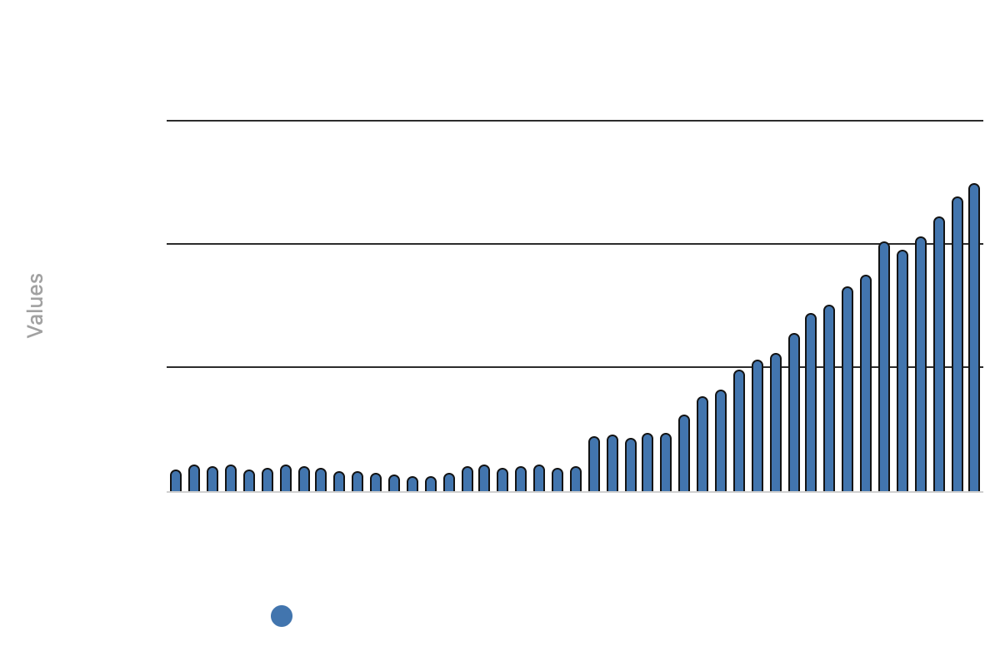

In 2004, Mozambique officially reported an 800% increase in small-scale fisheries catch in a single year (Zeller and Pauly). Unfortunately, this was not a miracle of oceanic life but a product of data bias.

FAO’s capture production estimates
Catch statistics compiled by the Food and Agriculture Organization (FAO) of the United Nations is the primary source for global fisheries science. Its Global Capture Production Database is the primary database scientists and policymakers use to analyze catch trends worldwide, and time series analyses in fisheries are standard. For low-income countries that have been shaped by colonialism, civil war, and political reorganization, those reports can contain hidden nuances that make long-term data misleading. The Organization reports that wild capture fisheries catch about 86-92 million tonnes per year (Rigillo). It relies on member countries’ official reports which are typically drawn from government surveys. Thus, whenever a country’s capacity is weak, the data they report quietly inherits those weaknesses. Mozambique shows how unresolved changes in data collection lead to misinformed conclusions and can undermine the global tracking of fisheries.

Bias in Mozambique’s fisheries data
The World Bank ranks Mozambique as the second-poorest country in the globe (Manhique et al.). Under Portuguese rule, the colonial administration reported almost exclusively industrial catches to the FAO. The small-scale sectors that account for most of the country’s fishing were largely absent. Mozambique’s independence from the Portuguese in 1975 was followed by a civil war from 1977-1992, which further prevented standardized monitoring. These events in conjunction made it so that their officially reported catches stayed consistently low. However, in the early 2000s, the FAO and the World Wildlife Fund (WWF) helped Mozambique create a systematic method to estimate their small-scale catches (Zeller and Pauly). Consequently, their capture estimates increased by 800% in the year after it was implemented. Clearly, this immense discrepancy is a product of different data collection methods. Despite this, the FAO displays the skewed data on their official website (see graph below).

Current data
Although Mozambique’s FOA country profile does note that the sudden increase in catch production after 2003 is due to data collection methods, this disclaimer sits outside of the dataset itself making it go unnoticed. Additionally, stock assessments, which are based on officially reported catch estimates, also tend to focus on commercially valuable species (Hillborn et al.) small-scale fisheries in data poor regions overlooked twice.
Sources of bias
The bias stems from differences in reporting structures and changes in collection methods. It is an in-voluntary mixture of ascertainment, chronological, information, and reporting biases. Specifically:
- Ascertainment Bias: Pre-2004 data captured industrial catch but largely ignored small-scale fisheries.
- Chronological Bias: Only post-2004 data accounts for all fisheries after WWF’s intervention.
- Information Bias: Mixing collection methods makes yearly comparisons across 2004 invalid.
- Reporting Bias: FAO barely attributes the 2003-2004 stark increase to new methods and not real growth.
Zeller and Pauly refer to the outcome of these biases as the presentist bias: when improvements in recent data collection are combined with uncorrected historical data in one continuous series.

Impact of Bias
At face value, Mozambique’s time series of capture production suggests a thriving fishery when the opposite may be true. Historical catches were likely far higher than reported which means that any real change that is expected due to external factors such as climate change and policy remains hidden. Because catch data forms the basis of stock assessments, managers may conclude that Mozambique has flourishing stocks that can support more fishing. Reliance on unharmonized time series data makes it possible that authorities can over-license fishing access and mismanage marine ecosystems and effectively harm national food security (Jacquet). Coastal communities that depend on fishing for subsistence and income would come to bear the costs of over exploitation. Moreover, these hidden peculiarities in the data can chip away public trust in widely cited global organizations such as the FAO.

Connection to EDS242
Extractive data logic
The FAO permanently established itself in October of 1945 in response to the global loss of agriculture during World War II. It consisted of 45 countries with the intention of reducing food insecurity, alleviating poverty and improving nutrition (Pesek). Early on, the FAO stated that they intended to “obtain and publish essential fisheries statistics for all countries of the world” (Committee on Fisheries). Although admirable, the need for data from every country appears to have caused them to question it slightly less. The FAO approached data collection from each country, largely ignoring the context of the data. Mozambique was left to deliver their incomplete data to the FAO instead of having a holistic understanding of the deep conflicts the nation faced. This is what is regarded as extractive data logic: the act of pulling relation from bodies and land to data (Vera et al.). Prior to 2000, they overlooked that Mozambique was a small country with civil disputes making accurate fisheries data a lower priority concern. It was not until the 2000s when the WWF noticed the reverberating effects of their history on their ability to accurately estimate catches that the intensity of extractive data logic softened and aided the country.
Science-policy dialogue
Additionally, this highlights the need for effective dialogue between science and policy. To reiterate, the FAO is primarily a policy and intergovernmental advisory organization, though it relies heavily on scientific research. The scientific data they ask countries to report is the foundation to the policies that emerge from the Organization. It is not uncommon for policymakers to incorrectly interpret data for political momentum (Guest Lecture by Cori Lopazanski). Having data like Mozambique’s out there makes the likelihood of incorrect interpretation of data for political agendas occurring far greater. Making it appear as though fisheries in Mozambique have experienced much higher capture production than their historical amounts may cause incorrect allocation of aid and wrongly influence ecosystem management (Friess and Webb). Furthermore, it hides the global impact of climate change and commercial fishing for this already overlooked nation.

What we can do
Long-term data collection is especially valuable today as it is able to detect trends due to a changing climate. However, if and when data collection methods change and leave previous data uncorrected, that produces a biased time series. A marketed solution for the case of Mozambique is updating its FAO with its reconstructed catch production values (Zeller and Pauly). This would merge estimated data with officially reported data, which itself creates its own bias. Seeing as there is no way that data pre-2000 can be fixed without committing perhaps greater counts of data bias, the FAO has a responsibility to explicitly label contentious data. To further prevent this bias from occurring, it is imperative to be thoughtful with data collection methods, especially when involving vulnerable populations, seeing as data is never free of context and human bias (Banks et al., Barrowman). Scientists and policymakers should have contextual information to best support such communities. Principally, it is then essential to ensure that policy adapts to and remains closely connected with the realities of scientific conclusions and the livelihoods that data represents.
References
Banks, George C., et al. “How to Reduce Bias in the Life Cycle of a Data Science Project.” Journal of Business and Psychology, vol. 40, no. 6, Dec. 2025, pp. 1253–73. DOI.org (Crossref), https://doi.org/10.1007/s10869-025-10022-x.
Barrowman, Nick. “Why Data Is Never Raw.” The New Atlantis, https://www.thenewatlantis.com/publications/why-data-is-never-raw. Accessed 10 Nov. 2026.
Catalogue of Biases Collaboration, Spencer EA, Brassey J.. In: Catalogue Of Bias 2017: https://catalogofbias.org/biases/ascertainment-bias/
Committee on Fisheries. “From 1950 to Today – Celebrating 75 Years of FAO Fisheries and Aquaculture Statistics.” 2026, https://openknowledge.fao.org/server/api/core/bitstreams/ca5fcbba-1631-42a5-9b54-70ed78dde979/content.
Food and Agriculture Organization of the United Nations (FAO-UN). “Fishery and Aquaculture Country Profiles. Mozambique. Country Profile Fact Sheets.” In: Fisheries and Aquaculture [Online], Nov. 2023, https://www.fao.org/fishery/facp/moz/en.
Friess, D. A., and E. L. Webb. “Bad Data Equals Bad Policy: How to Trust Estimates of Ecosystem Loss When There Is so Much Uncertainty?” Environmental Conservation, vol. 38, no. 1, Mar. 2011, pp. 1–5. Cambridge University Press, https://doi.org/10.1017/S0376892911000026.
Hilborn, Ray, et al. “Effective Fisheries Management Instrumental in Improving Fish Stock Status.” Proceedings of the National Academy of Sciences of the United States of America, vol. 117, no. 4, Jan. 2020, pp. 2218–24. PubMed Central, https://doi.org/10.1073/pnas.1909726116.
Manhique, Ivan, et al. “How Did Mozambique Become One of the World’s Poorest Countries?” International Growth Centre, 16 June 2026, https://www.theigc.org/blogs/mozambique-one-worlds-poorest-countries.
Pesek, Thomas. “FAO Celebrates 75 Years.” UNA-USA, 16 Oct. 2020, https://unausa.org/fao-celebrates-75-years/.
Rigillo, Nicholas. “SOFIA 2026: Global Fisheries and Aquaculture Production Reaches New Highs.” Food and Agriculture Organization of the United Nations, 16 June 2026, http://www.fao.org/newsroom/detail/sofia-2026–global-fisheries-and-aquaculture-production-reaches-new-high/.
Young, Juliette C., et al. “Improving the Science-Policy Dialogue to Meet the Challenges of Biodiversity Conservation: Having Conversations Rather than Talking at One-Another.” Biodiversity and Conservation, vol. 23, no. 2, Feb. 2014, pp. 387–404. DOI.org (Crossref), https://doi.org/10.1007/s10531-013-0607-0.
Vera, Lourdes A., et al. “When Data Justice and Environmental Justice Meet: Formulating a Response to Extractive Logic through Environmental Data Justice.” Information, Communication & Society, vol. 22, no. 7, June 2019, pp. 1012–28. DOI.org (Crossref), https://doi.org/10.1080/1369118X.2019.1596293.
Zeller, Dirk, and Daniel Pauly. “The ‘Presentist Bias’ in Time-Series Data: Implications for Fisheries Science and Policy.” Marine Policy, vol. 90, Apr. 2018, pp. 14–19. ScienceDirect, https://doi.org/10.1016/j.marpol.2018.01.015.
Citation
@online{gonzalez2026,
author = {Gonzalez, Eden},
title = {Something’s {Fishy}},
date = {2026-11-11},
url = {https://edengonzalezz.github.io/posts/2026-11-11-something-fishy/},
langid = {en}
}